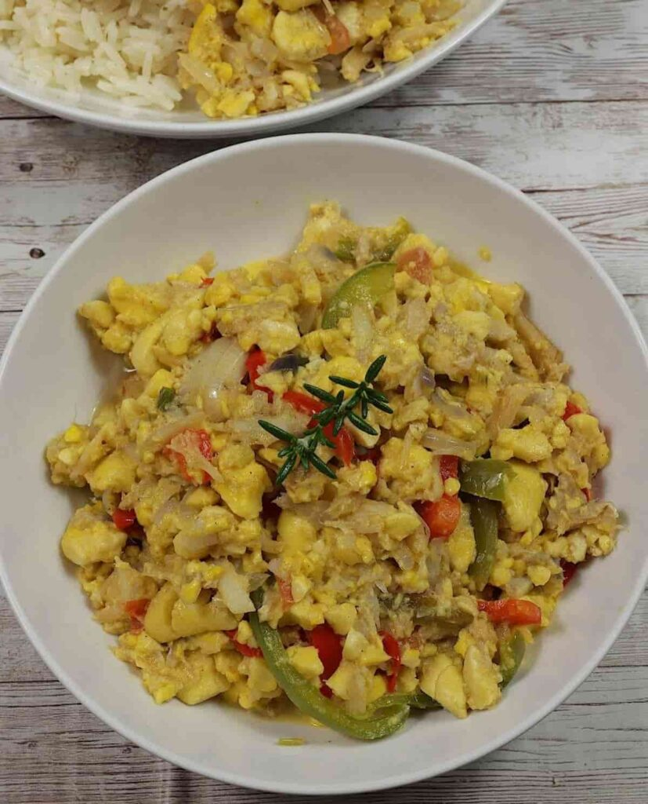

Ackee & Saltfish

Ackee & Saltfish
Ingredients
- 1 lb salted fish
- 1 can of ackee
- 2 garlic cloves
- 1 large fresh chopped tomato
- half each of chopped red, green and yellow peppers
- 1 large onion chopped
- 1 tbsp olive oil
- 3 sprigs of thyme
-
half a scotch bonnet pepper, deseeded and finely choppedsalt and black
pepper to taste
Steps
-
Soak the saltfish overnight in a bowl of water. After soaking throw the
water away. Add fresh water to a pan and boil the saltfish for 20 mins.
Drain, de-bone and peel any skin that may remain on the fish.
-
Put the oil in the pan and add the onion, garlic, peppers, tomato and
thyme. Fry on a very low heat for 15 mins, cover the pan if necessary.
-
Break the saltfish into small bite-sized pieces then drain the ackee,
add both the to the pan. Gently fold the ingredients together – the
ackee is very delicate so try not to stir too much. Cover and cook for a
further 10 mins. Serve with basmati rice and fried plantain.